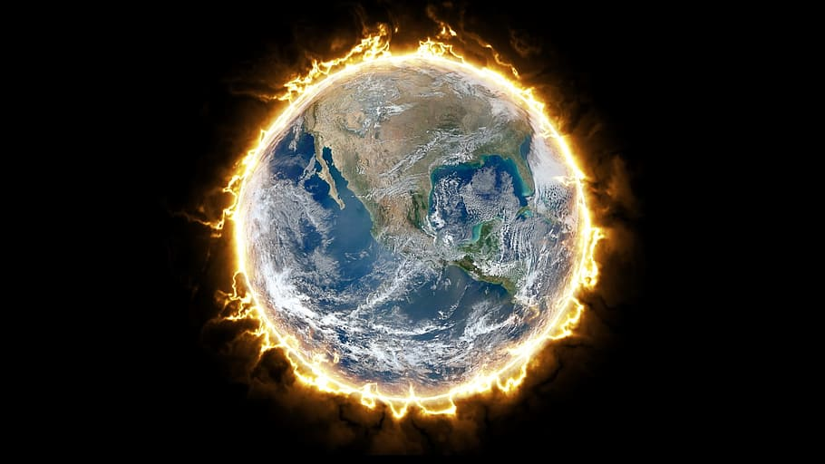

Plagues have been happening to mankind since the beginning of time. This is nothing new. The only difference between COVID-19 and the Bubonic Plague (besides the obvious numbers lost so far) is that COVID-19 has happened in a time where borders and boundaries are blurred via air travel, and media is easily accessible to absolutely anyone, giving the spread of the virus, as well as panic and fear a much wider reach. In this way, modern illness has taken on a new face as it now has the ability to travel the world instead of one or two places on the globe. Cue Jupiter, planet of massive expansion and travel, and the planet that seems to be most associated with this pandemic.
And, of course, we have to take this seriously. We would be stupid not to. But we also have to stay grounded and remember that this has happened before, we have survived, and we will continue to survive. We have to carry on washing our hands, following the advice of medical professionals, and generally just using our common sense. But, what does Astrology have to say about all of this? Bearing in mind that I, a humble Astrologer who knows only bits and pieces about this “type” of astrology (let’s call it “world” astrology), have only just managed to cobble together a few things that are starting to make sense as a greater whole. And besides, it is intriguing.
So, what do we know about COVID-19?
- It began in China around December with the first few cases, but that it was hushed. I'm not interested in the political reasons why, but the Guardian has a pretty great article here.
- It's highly contagious and can be deadly to the vulnerable (the old, young or immune-compromised). Italy has been hit hard with the number of deaths due to the propensity of older folks.
- The only practical way to contain it is to limit any kind of travel, practice social distancing (hooray for introverts!) and keep washing our hands and practicing good hygiene.
- Idiots have been rushing to the shops to stockpile toilet paper (of all things! Come on, Karen! Get a grip!) and selfishly prepare for doomsday whilst the poorer amongst us don't have a chance of doing the same.
- All the fun has been cancelled.
- Most businesses are already suffering from the impact of COVID-19 – and it has a knock-on effect on all individuals, freelancers, corporates, low income workers – few are being spared.
- And, most recenetly, in the news, we are now in a "world recession". Jeez.
How can Astrology explain any of this?
What symbology is being reflected in the stars to support the above? When my people asked me last year (my people, meaning my handful of loyal followers who I really don’t deserve!), I just shook my head at the time and said it was going to be a rough year. Little did I know.
- Some Astrologers have speculated that the Eclipse on 26 December 2019 set this thing off. Makes sense – South Node Eclipses are often associated with disease and illness. Eclipses in general are times of crisis, and it seems that the critical 14-day window of symptoms appearing was ignored between the Eclipse of 26 Dec 2019 and 10 Jan 2020 by the Chinese Government.
- We also cannot ignore the great “Saturn/Pluto conjunction” of 12 Jan 2020, shortly after the 10 Jan Eclipse. Most of us Astrologers were predicting hellfire and brimstone, myself included. And hellfire and brimstone we have. However, the predictions focussed on the fall of economy – a crisis – and the destruction of businesses (Capricorn) and the general world order. If this ain’t world order and economy being destroyed by COVID-19, then I will eat my socks. “World Recession” anyone? The Economic aftershocks are sure to be felt the rest of this year, at the very least, as Saturn and Pluto continue to do their deadly dance.
- Moreover, we have Jupiter and Pluto leading up to a conjunction in Capricorn come 30 March – 4 April – Jupiter is already “in orb” with Pluto (that means, to muggles out there, he’s close enough to be having an effect already) which reflects the immense, disgusting GREED that has taken over many individuals. Maurice Fernandez, a brilliant evolutionary astrologer, presented an informative talk in Cape Town recently, which highlighted the consumerism of this aspect, how it’s the symbol for “hidden or great wealth” held by the special few who can afford it. This conjunction can be felt the entire year, as all of us feel the economic pinch. Also, it’s useful to note that Pluto represents control, and Jupiter expansion – many of us feel completely out of control and overwhelmed at the uncertainty and unpredictability of the situation. As Maurice said at the time – what will we do when we have power (financial, material – Capricorn) – will we misuse it, or show that we can be trusted? How will us privileged help the vulnerable? Some of us have shown our true colours already.
- Jupiter and Pluto may also have a tendency to expand an issue to far beyond what it really is – in this case, an expanded (Jupiter) fear of death (Pluto).
- I believe that this period between 30 March– April will be very important as well as the joining of Mars to Saturn on 31 March. More about that later.
- It’s interesting to note that there are so many planets in Capricorn – the sign that represents the aged and elderly. Italy has been one of the hardest-hit, with one of the oldest populations in Europe.
- Mars has a part to play – he tends to “activate” an Eclipse, and in Capricorn, he has already passed over the sensitive degree of the Eclipse in December. He shifts into Aquarius 31 March, right on the heels of the Jupiter-Pluto conjunction. Furthermore, this represents a critical time, and possible a turning point. It also may represent the height of fear. Jupiter expands – remember that – and his connection to Pluto may literally “expand” the virus, but also possibly transform it. That’s Pluto for you.
- It’s naïve to think that this will all be over in a few weeks. Even should the virus start winding down, as it now has in China, the after-effects will be enormous, in the losses and grief felt by many as well as the economic losses. However, Astrology has this marvellous way of revealing the “bigger picture” so that we may make sense of the suffering – after all, in “Man’s Search for Meaning”, suffering needs to have some sort of meaning, or else we would simply lie down and die.
What's the Bigger Picture all about?
As a true Aquarius, I always like to think to myself – what might be the lessons, karma, bigger picture of this story? What can I learn? How can I inspire? (Also, who is really behind this, is it aliens, is China behind it all etc etc – but I’ll nurse my conspiracy theories like a good, paranoid little Aquarius for now).
- Firstly, the shift to the current economic system. Again, “World Recession”. No Astrologer can truly predict the outcome of that, but there’s certainly going to be a shift, for better for for worse here. Whether this puts China in the lead, or ‘merica, it remains to be seen. Perhaps we can all learn a little more about survival – real survival. Not the survival of not having surplus money in our accounts to eat at our favourite sushi restaurant tonight. Time to re-learn how to cook, methinks.
- Collectively, as Saturn, Mars and eventually Jupiter leave materially-driven Capricorn, and head into Humanitarian Aquarius, there’s a shift towards a greater community -a community that humans have been sorely missing. Perhaps all this self-isolation may drive us towards a greater connection. After all, China is not yet out of isolation. Wh’s’ to say what new things the eyes will see after this period of solitude? Aquarius is about the brotherhood, the collective – not just your own, selfish goals to make a name and reputation for yourself. After the worldly success of Capricorn comes the unifying, group-minded energy of Aquarius. Corporate responsibility and all and all.
- Sometime someone said to me, which I found interesting, was how humans have been complaining about “being too busy” for so long. There’s a beautiful poem going around about how the people learned to rest, and reflect again. For the privileged minority, yes, there is that, and the chance to re-evaluate our priorities and how much we really need. Do we really need that new car? That special blender? That silly subscription?
- I think we can all learn to release the need to control. I’ll be the first one to admit I am a control freak. I need a plan. I hate uncertainty. But, creativity blooms here, and trust is learnt. We could all do with a bit more trust (but please wash your damn hands, too! Carrying a crystal and praying to the angels won’t help a bit if you’re not heeding our brilliant medical community!).
As ISAR said in a statement:
“No one (not even astrologers) knows for sure how long these disruptions and sacrifices will be necessary. “
What we do know, is that stories have a beginning, a middle and an end. Every. Single. One. We can help by studying the symbolism and making some guesses about when these points could be (my guess is the peak at end of March and the integration/effects over the rest of the year). But we are not Gods – and we also have to release our own desire to control the universe by trusting that things – as they always do – will run their course. That life will be changed, even a little bit. That the planet is being given a break for a change (when last did we give mama earth a break?). That we are learning compassion, community and love for each other. That there is a bigger thing going on that our own little problems – our kids being home, a bit less money, a client falling away or a party cancelled. The world has needed change for a long, long time – and typically, humans seldom change unless it’s forced on us. We have to experience a crisis and a “dark night of the soul” to make that shift. Remember, we are adaptable, resourceful, smart and good at survival. This is the time to remember who we are and what we are capable of!